Dependency questions on the delegate registration form
For event organisersNot an organiser?
In this article, we’ll talk you through how to create dependency questions on the delegate registration form.#
From your dashboard, click on Registration → Tickets → Form.
Next, click on the Add Question button at the top of the page.
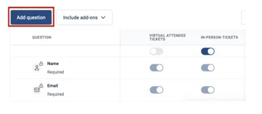
Please note: you can only create dependency questions on the following question types - Dropdown, Checkbox and Radio.
Click on one of the above tabs (Dropdown, Checkbox and Radio), and a column will appear on the right of the screen.
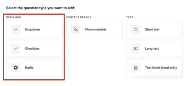
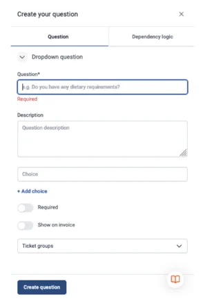
Add your question to the question box (1), then add the answers to your question in the choices box (2) so a person can select one.
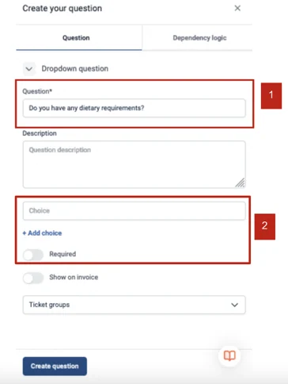
To add multiple answers, click on + Add Choice.
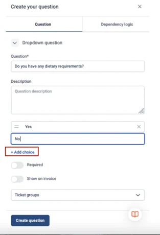
You can then toggle on or off if the question is a required question and if you want it shown on the invoice.
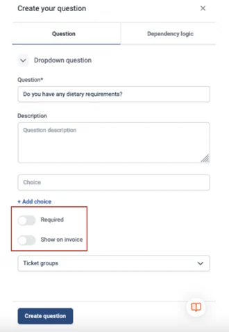
You can also assign dependency questions to a specific ticket group by selecting from the drop-down option if you wish.
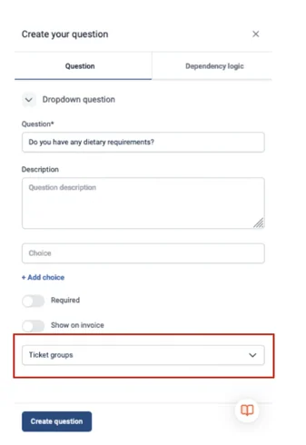
Once complete, click the Create Question button at the bottom of the column.
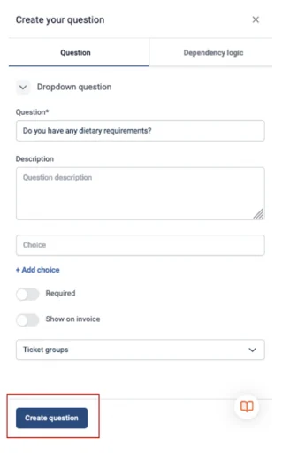
Now you need to add your follow-up question.
From the dashboard click on Add Question and then click on Short Text Question from the drop-down menu.
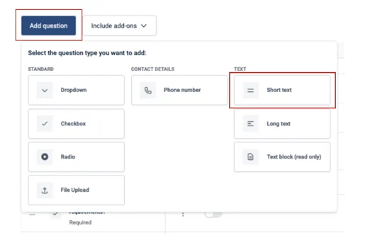
Type in your follow-up question in the Question Box.
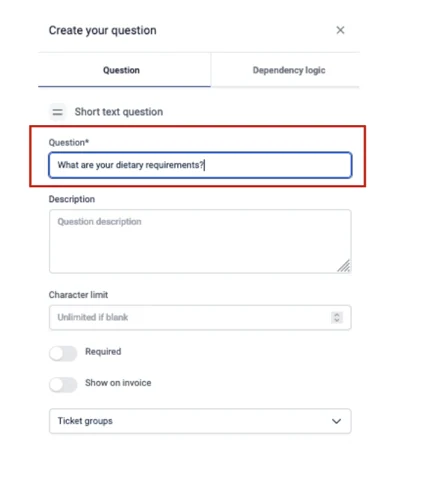
The description box allows a person to type in their answer.
When complete click on the Create Question button at the bottom of the column.
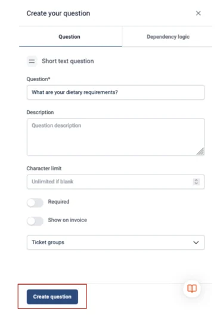
When you have finished creating all of the questions, from your dashboard, click on the parent question (the first question you created that now has subsidiaries) and click on Dependency Logic at the top right of the screen.
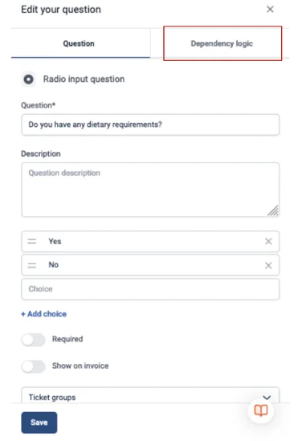
The dependency logic is how the form will know to ask follow-up questions depending upon what answer the person has given.
For example, if the question is - Do you have any dietary restrictions and they answer Yes, then the follow-up question can be shown asking for their dietary information.
If they answer No, they do not need to see the follow-on questions for that main question as it does not apply to them.
To create your dependency logic first, you will need to add a condition - the options are “equal to / not equal to” and for our example, you will want to select “is equal to”.
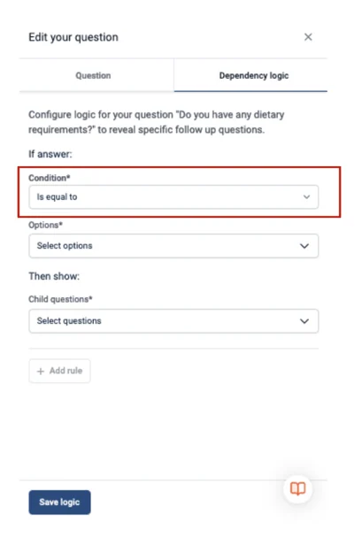
Then, in the Options Box, you need to select Yes or No.
This means if you want to ask a follow-up question, then want to select Yes.
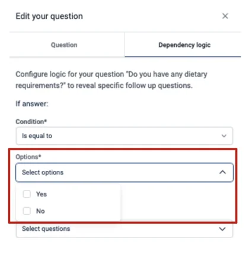
Then you can select the ‘child question’ (the follow-up question) that needs to be answered - in this case, for our example, it would be “What are your dietary requirements?”.
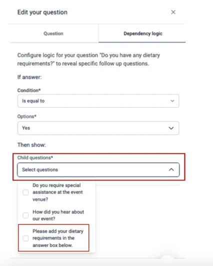
You’re able to carry on adding further questions under the main “parent question” by clicking on the Add Rule button, and following the above steps.
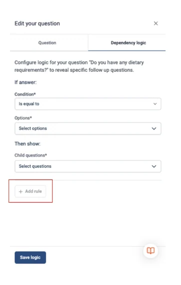
When you are finished, click the Save logic button at the bottom of the screen.
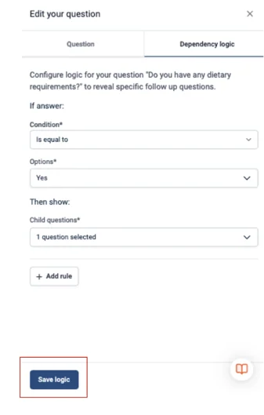
Back on your dashboard, you will see an arrow with two heads next to a question. This shows that this is the parent question; the child (follow-up) questions are nested underneath.
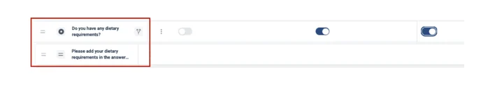
You then need to make sure the question is toggled on under the right ticket group. In this case - In Person etc.
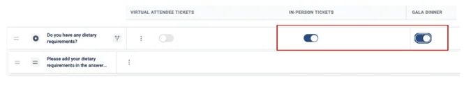
If you need further assistance, please contact our Support team via this Contact Form.
Didn't solve it? Ask our support team
No question is too small, and there's no charge for asking. Raise a ticket and someone who knows the software will pick it up.
Did this page solve it?
Thanks — this helps us fix it.